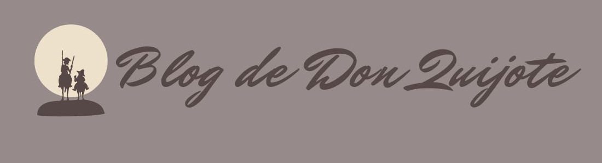
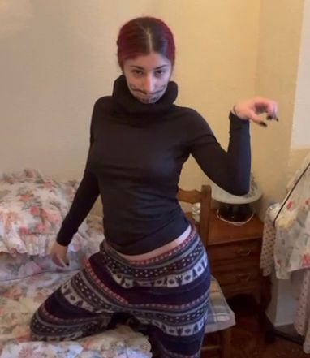

Biografía de Miguel de Cervantes
Miguel de Cervantes Saavedra nació en Alcalá de Henares en 1547. Pasó buena parte de su vida cambiando de residencia. Distinguimos tres periodos en función del país donde vivió: su juventud en España, el viaje a Italia y la vuelta a su país.
Durante la primera etapa de su vida, acompañando a su padre, cirujano practicante, viajó por distintas ciudades españolas. Durante esta época conocemos de su pobreza, sabiendo inclusive que su padre fue encarcelado por estar endeudado. Tuvo que huir del país porque se rumorea que fue demandado a la Inquisición por pinchar a un noble en duelo (aún este no queriendo participar en el susodicho) y que por tanto fue condenado (lo castigarían cortando su mano derecha y siendo ridiculizado públicamente).
Se trasladó a Italia donde comenzó la segunda etapa de su vida. Dos años después de su llegada a Italia, participó en la batalla de Lepanto por recomendación de Don Juan de Austria y el Duque de Sesa. Aquí fue alcanzado por tres disparos de arcabuz (arma de fuego de corto alcance) que no lo derribaron pero lo dejaron inmbálido de su mano izquierda. Cuando regresaba a España fue hecho prisionero en Argel junto a su hermano, de donde fue rescatado justo antes de ser enviado a Constantinopla por los frailes trinitarios después de cinco años de cautiverio. Esta larga etapa fue debida a que el propio Miguel prefirió que su hermano saliese primero debido a su bajo rango como militar, que lo llevarían a sufrir torturas tales como la sodomización. De igual manera él trató de fugarse a lo largo de estos años.
Tras su regreso a Madrid, comenzó la tercera etapa de su vida, la cual fue muy dura. Se enteró que sus hermanas e hija habían tenido que prostituirse para poder ganar dinero, por lo que probó diversos trabajos. De igual manera, su situación económica era muy pobre. Más tarde acabaría encerrado varias veces en la cárcel por distintos asuntos (por ejemplo, el timo del banquero Simón Freire), allí fue donde "se engendró" El Quijote. Como dato curioso, sabemos que tres días antes de morir había terminado su novela bizantina Los trabajos de Persiles y Segismunda.
Miguel de Cervantes fue un hombre elegante, aseado y que frecuentemente, iba a la moda. Se lo consideraba muy feminista, pues después de ver lo que sus familiares mujeres sufrieron para rescatarlo, siempre defendió a la mujer y sus derechos como persona (un ejemplo de esto se ve en su matrimonio, que al no terminar de cuajar, dejó totalmente a su libre albedrío a su esposa). Fue justo, luchador y trabajador, digno de merecer la fama que a día de hoy ha conseguido.
El ingenioso hidalgo Don Quijote de la Mancha